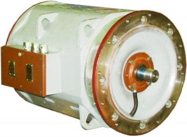
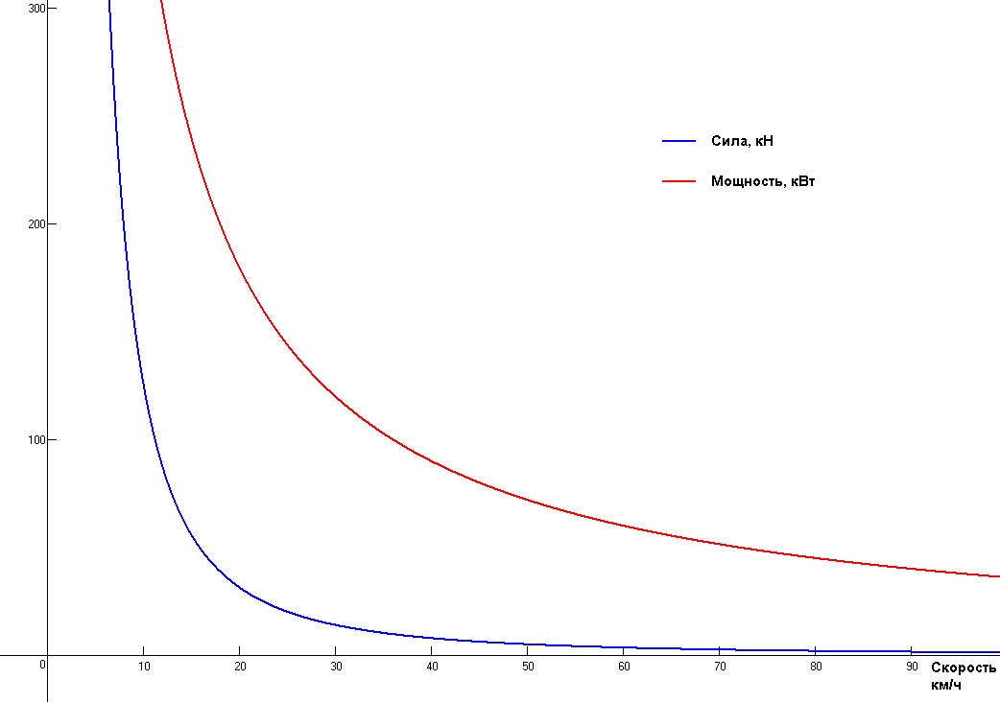

Вагон метро имеет 4 оси. К каждой из них пределана примерно вот такая вот штука:

Казалось бы, всё просто. Слева контакты, воткнул их в розетку, штука, торчащая справа, закрутилась, вагон поехал. А вот нет. И сейчас мы поймём, почему.
Всё дело в том, что обычный коллекторный (
проверить - прим. ред.) двигатель заметно меняет свои свойства при изменении скорости движения поезда. Для вагонов типа Ё это видно из следующего графика:

Даже если вы не знаете, что такое кН и кВт, всё равно, основную мысль понять легко - если при скорости 20 км/ч двигатель нормально разгоняет состав, то при скорости в 80 км/ч он уже не тянет. А при скорости 10 км/ч - наоборот, тянет слишком сильно, колёса начинают проскальзовать (
википедия: боксование).
Кроме того, потребляемый двигателем ток ведёт себя так же, как и его мощность. А это значит, что на малых скоростях двигатель будет представлять собой для контактной сети
короткое замыкание, что тоже не очень полезно.